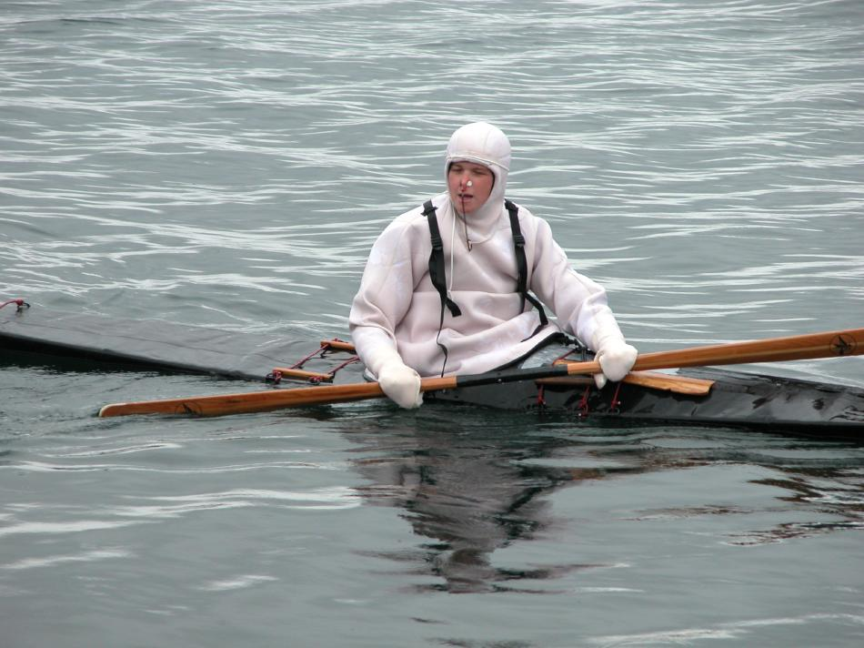

| 2004 Greenland Championship | Menu Previous Page Next Page |
|
 Becky Molina paddling the Sea Rover folder at the rolling competition. Becky won first place in team rolling, second place in the international women's individual rolling event, and second place the 6K distance race. |
|